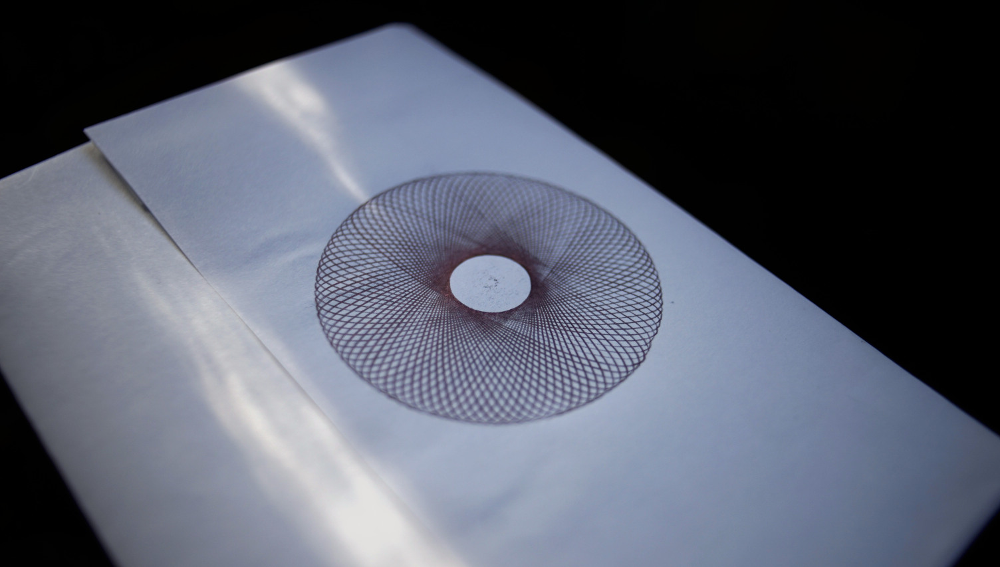

A spirograph is a geometric drawing device that makes generative art.
The formula to find how many turns it will take to close a line is
R/gcd(r, R), where R is the outer ring, and
r the inner gear. The gdc of two numbers is the Greatest Common Divisor.
| 96 | 105 | |
|---|---|---|
| 24 | 4 | 35 |
| 32 | 3 | 105 |
| 40 | 12 | 21 |
| 42 | 16 | 35 |
| 45 | 32 | 7 |
| 52 | 24 | 105 |
| 56 | 6 | 15 |
| 60 | 8 | 7 |
| 63 | 32 | 5 |
| 72 | 4 | 35 |
| 75 | 32 | 7 |
| 80 | 6 | 21 |
| 84 | 8 | 5 |
incoming: 2026